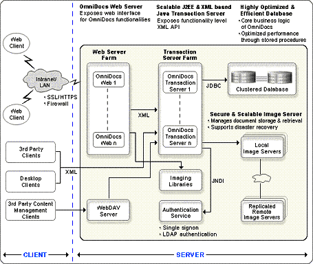

OmniDocs Server is a multi-tiered platform independent solution built using robust server-side Java and J2EE technologies. It works on Windows, Linux and Unix operating systems, industry standard databases such as MS-SQL, ORACLE, DB2, PostgreSQL and application servers such as BEA WebLogic, IBM WebSphere, and web-servers such as IIS, iPlanet and Apache. OmniDocs also provides an XML-based API for System Integration with 3rd party business applications.

Highly optimized and Scalable Database for efficiently handling millions of documents
· Implements core business logic of OmniDocs using optimized stored procedures.
· Ability to handle millions of documents.
· Support for MSDE on Windows, MS-SQL Server and ORACLE on Windows, ORACLE, DB2 and PostgreSQL on Linux and ORACLE on Unix.
· Contains all major Document Management functionalities like Cabinets, Folders, Subfolders and, document operations, version control, powerful searches, access rights and security, document indexing and filing, annotations and administration.
· Supports all Adaptive Workflow features such as routing and tracking of documents.
Scalable and Secure Image Server for handling replication and disaster recovery
· Manages storage and retrieval of documents.
· Support for multiple Image Servers connecting to single or multiple databases.
· Support for replication between remote or local Image Servers.
· Manages caching, online, offline and near online archival.
· Responsible for Document Lifecycle Management
· Implemented using server-side Java.
· Available on Windows, Linux and Unix
· Optional Storage Management Server for managing high volume systems through offline and near-online devices such as Jukeboxes and optical disks.
· Supports disaster recovery.
J2EE and XML-based Application Server for scalability and availability
· Scalable and platform independent architecture
· J2EE-based transaction support
· Exposes consolidated functionality-level XML-based API for easy integration with client applications
· Interacts with Document Database using JDBC
· Responsible for Transaction Management, Connection Pooling and Session Management
· Available on Windows, Linux and Unix platforms
· Support for J2EE-based application servers such as BEA WebLogic™ and IBM WebSphere™ and Newgen’s own XML and Java-based Transaction Server.
OmniDocs WebDAV Server for Enterprise Content Management
· Enables users of enterprise applications to seamlessly interface with OmniDocs
· Requires no additional client component to be downloaded
·
Supports all client applications that follow IETF
WebDAV standard
LDAP authentication Service for OS-integrated security
· Integration with Directory Services for user authentication to ensure maximum security
· Synchronizes with directory service for user/group information
· Supports Windows NT and 2000 Active Directory, iPlanet and NDS services
·
Supports single sign-on for authentication
OmniDocs Imaging Libraries for super-fast Image Processing operations
· Supports Image Enhancements, Image Recognition, Image Compression, Image Conversion, Image Manipulation and Data Extraction features
· Support for multiple file formats viz. TIF, GIF, JPG, JFIF, BMP, DIB, PCX, DCX, HTML
· Recognizing the image file type information without having to download completely.
·
Available on Windows, Linux and Unix platforms.
Image Viewer Applet for platform-independent Image View
· Supports viewing image documents such as TIF, GIF, JPEG etc. on any platform using standard browsers
· Supports standard image manipulation and geometric operations such as rotation, invert, zoom etc.
· Supports applying diverse text and graphical annotations on Image documents
· Unique Progressive Display technology
·
“Print Exellerator™” for High Quality printing on
Windows.